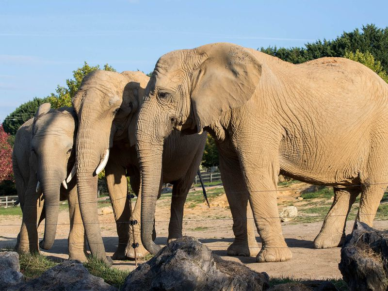

09:00Entree Sud
Arriver a l'ouverture et filer vers les zones prioritaires
Prenez le plan papier ou ouvrez le plan officiel, puis avancez sans vous attarder sur les petites zones proches de l'entree.
orientationanti-foule
ZooParc de Beauval
Un parcours compact pour commencer des l'ouverture, limiter les allers-retours et garder l'energie pour les zones les plus impressionnantes : elephants, girafes, rhinoceros, hippopotames, grands felins, gorilles et pandas.

Prenez le plan papier ou ouvrez le plan officiel, puis avancez sans vous attarder sur les petites zones proches de l'entree.
Commencez par les grands animaux visibles en espaces ouverts. C'est souvent plus agreable tot, avant les gros flux de visiteurs.
Gardez cette zone dans le bloc du matin : elle colle bien avec la savane et evite de traverser le parc plus tard.
C'est une etape a ne pas presser. Restez assez longtemps pour observer les deplacements, les interactions et les points d'eau.
Verifiez les animations du jour. Si une animation elephants, hippopotames ou pandas tombe bien, decalez le parcours de 15 a 20 minutes.
Observez-les depuis les differents points de vue. C'est une bonne etape avant le repas, car elle se suffit a elle-meme meme sans animation.
Evitez de revenir vers l'entree uniquement pour manger. Beauval indique plusieurs points de restauration ouverts selon la saison.
Priorisez la Terre des Lions. Ajoutez le Bois des Fauves seulement si vous voulez completer avec jaguars, hyenes ou pantheres.
Gardez ce bloc en milieu d'apres-midi : il offre une respiration plus abritee et reste dans le theme des animaux imposants.
Terminez par les pandas geants. S'il reste du temps et que vos jambes suivent, ajoutez le Territoire Nord-Americain pour les ours bruns.